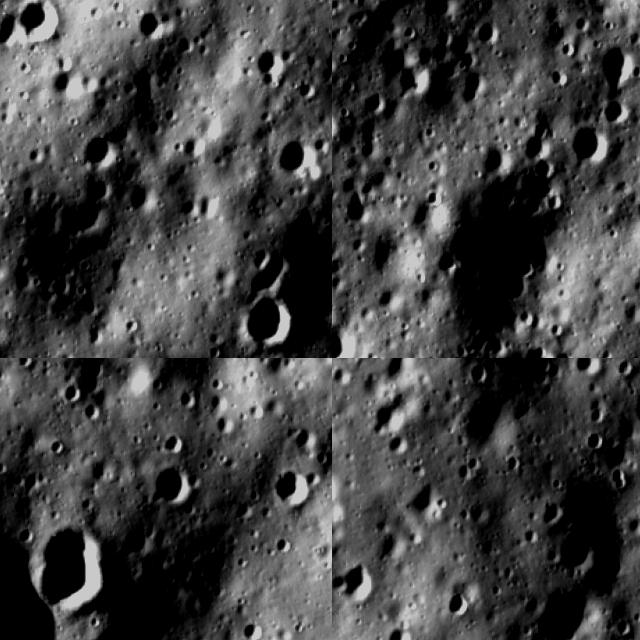
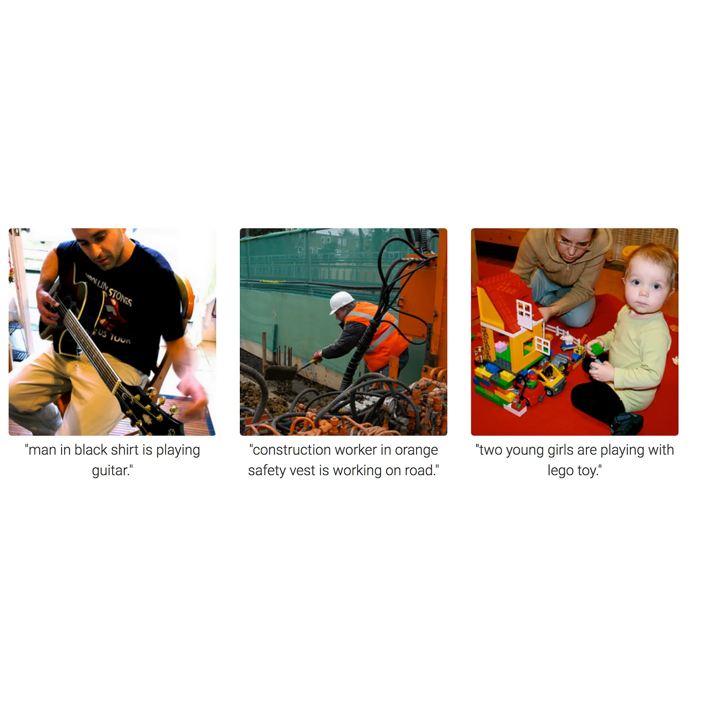
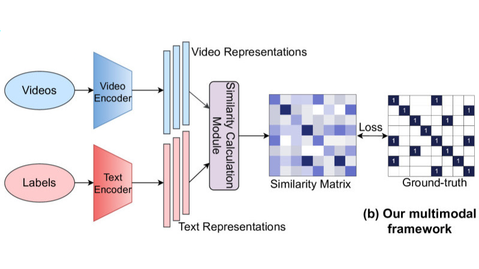
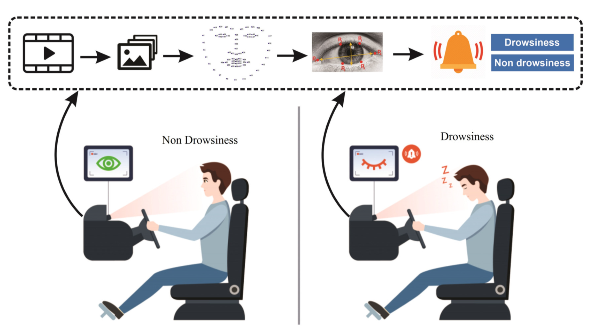

My Projects

Job Aggregator Conversational AI Agent
- Processed user resume and preferences to scrape 1000+ job listings from the last 72 hours.
- Prompt engineered for the GenAI agent to understand user queries to update recommendations.
- Developed a state-of-the-art matching algorithm to rank top 20 jobs for recommendation.
- Interface developed using Flask, GenAI agent able to provide career advice based on resume and recommendations.
- Agent able to dynamically scrape, match and update recommendations based on conversation.
- Technologies used: Python, OpenAI, Embedding Models, Flask, NLTK, PyMuPDF, JobSpy, Pandas.

Lunar Crater Detection and Depth Analysis
- Using deep learning to detect craters on the lunar surface from images captured by Chandrayaan-2 satellite.
- Created a dataset using web scraping and used Google Colab Pro to handle the huge dataset size; analyzed images obtained from the Optical High-Resolution Camera on Chandrayaan-2 satellite, accessed from the ISRO website.
- Manually labelled 900+ images of craters and trained a R-CNN and YoloV5 model to detect craters.
- Implemented a geospatial coordinate tracking and depth analysis algorithm to estimate the location and depth of the craters.
- Recorded an accuracy of 85% in detecting craters
- Technologies used: Python, Keras, OpenCV, RoboFlow and NumPy.

Image Captioning System
- Using a multi-model system to recognize and output captions describing the images.
- Processed the data from Flickr30k dataset– both image and caption vectors – by passing them through LSTM layer and Feed Forward Neural Network.
- Recorded an accuracy of 78% in recognizing images and providing appropriate captions.
Data Analysis to understand mental health in tech industry
- Using a multi-model system to recognize and output captions describing the images.
- Processed the data from Flickr30k dataset– both image and caption vectors – by passing them through LSTM layer and Feed Forward Neural Network.
- Recorded an accuracy of 78% in recognizing images and providing appropriate captions.

ML in Video Processing and Interpretation
- Worked with a team of 30 members to develop a multimillion-dollar project that was based on video processing and interpretation.
- Created a unified pipeline using C++ for processing multiple machine learning models.
- Conducted performance analysis and executed extensive testing on multiple iterations of the same models.
- Enhanced the pipeline performance by implementing CUDA acceleration.
- Built a multithreaded program that seamlessly integrates all the mentioned components, enabling efficient processing of multiple inputs simultaneously.

Driver Drowsiness Detection
- Developed a system that detects driver drowsiness using a camera and alerts the driver.
- Used OpenCV to detect facial landmarks and track the driver
- Implemented a CNN model to detect the driver's eyes and determine the level of drowsiness observed.
- Early warning implemented by system looking at signs such as driver yawning.